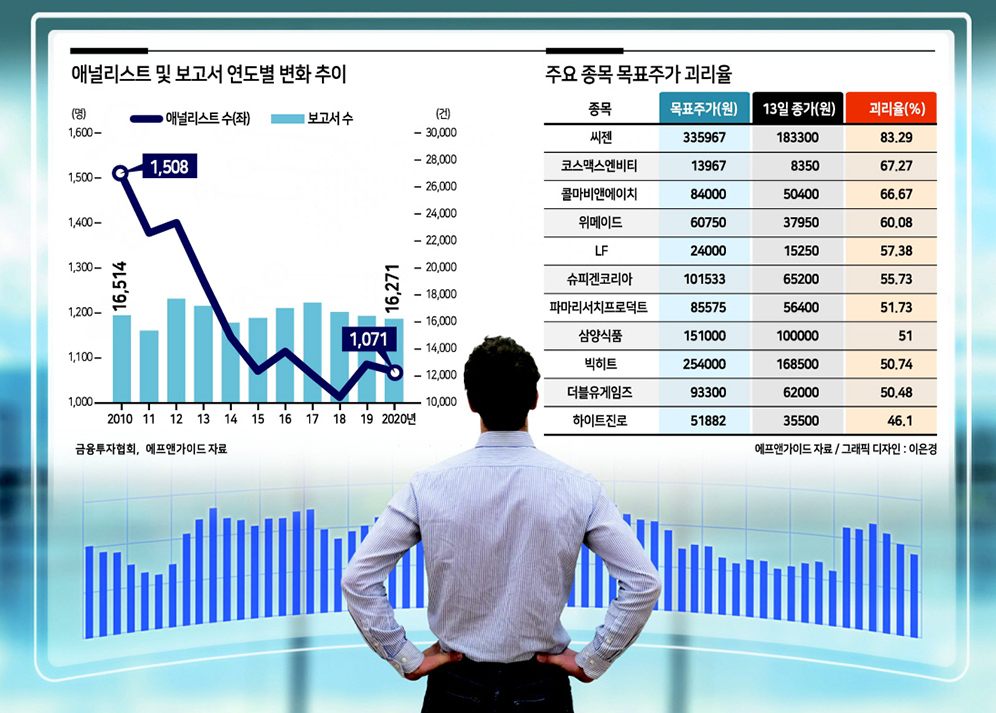

리포트 제목

- ① 대부분 중국 수입에 의존(2020년 10만 1,097톤 수입)하고 있는 양극재 전구체, 국내 주요 양극재 업체들의 전구체 내재화율은 약 20%에 불과
- ② 자체 측매 기술을 기반으로 소입경 전구체 대량 생산 기술확보, 올해 3월 5,000톤의 CAPA증설 완료로 하반기부터 매출 가시화
- ③ 글로벌 양극재 시장 점유율 1위 업체 유미코아와 MOU, 공동개발계약(JDA)체결, 향후 생산되는 전구체는 전량 유미코아에 납품 예정
- ④ Euro-6와 Tier-4 Final를 모두 만족하는 배기가스 후처리 기술을 보유, 대동.TYM 농기계 고객사의 수출호조로 관련 매출 성장 기대
- ⑤ 엔지니어링 업체 기련이엔씨 인수, 기존SCR 촉매기술을 엔지니어링에 더해 SCR 엔지니어링 솔루션 업체로 환경 사업 확대
- ⑥ 적정주가는 촉매사업 22F EPS 559원에 22F PER 11배, 전구체 사업 23F EPS 812원에 23F PER 34배 적용해 36,000원으로 커버 개시